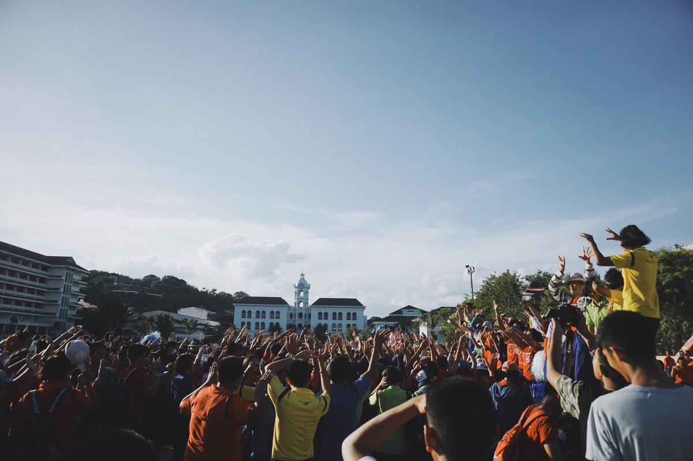
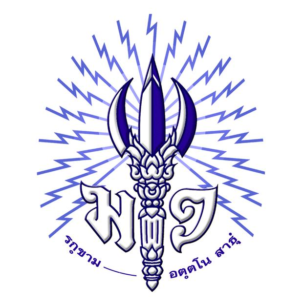

มาร์ชน้ำเงิน-ขาว
เพลงมาร์ชประจำโรงเรียนมหาวชิราวุธ จังหวัดสงขลา
คำร้อง : อ.พงศ์อินทร์ ศุขขจร
ทำนอง : ส.ท.สุนทร โภชนดา
น้ำเงินและขาว เราบูชา
สีมหาวชิราวุธที่เคยรุ่งเรือง
ต้องเชิดชูให้ประเทือง
เป็นขวัญเมืองคู่กับแผ่นดินในถิ่นของไทย
ไทยคงไทย เพราะได้พวกเราทุกคน
เข้าผจญราวีไว้ลาย
ให้บันลือเราคือลูกไทย
สู้จนตายแม้ใครมาราวี
น้ำเงินและขาวเราบูชา
สีมหาวชิราวุธที่เคยรุ่งเรือง
ต้องเชิดชูให้ประเทือง
เป็นขวัญเมืองคู่กับแผ่นดินในถิ่นของไทย
มารวมกัน ยึดมั่นในสามัคคี
อย่าให้มีสิ่งที่หมองใจ
สามัคคีนี้นำเราไป
สู่หลักชัยขอให้เราไชโย
(ทั้งหมด ซ้ำ 2 ครั้ง)